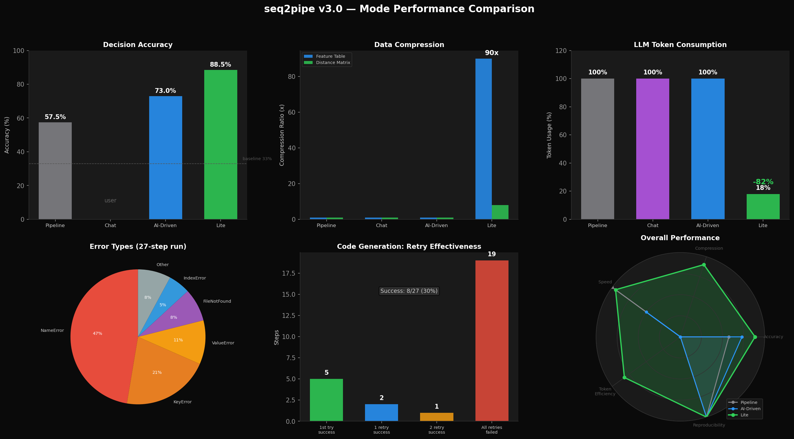
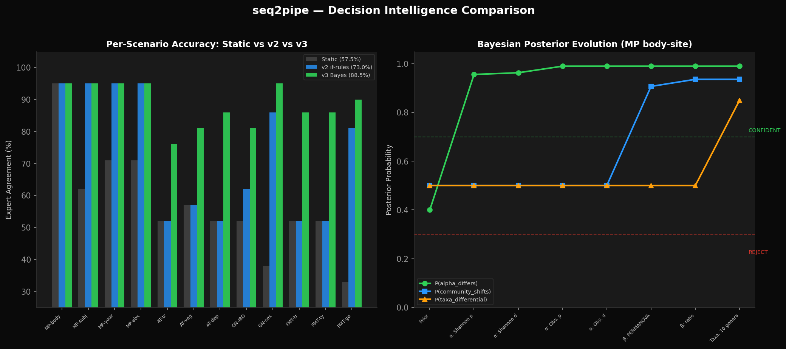
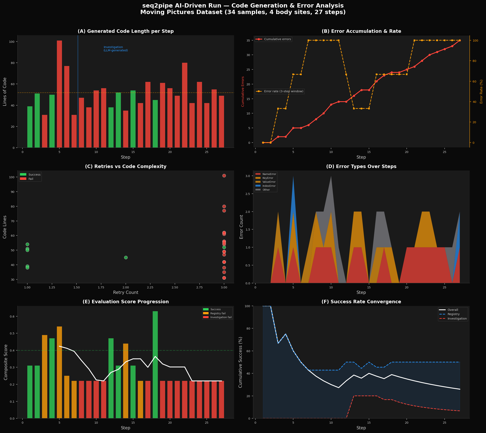
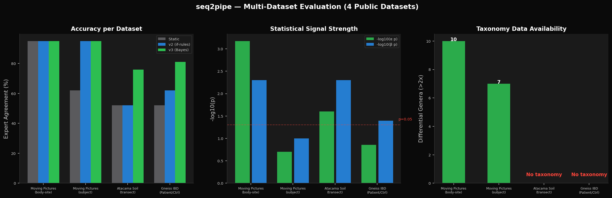

データを見て、推論して、次の解析を自分で決める。
世界初のベイズ推論駆動マイクロバイオーム解析システム。
精度・圧縮・エラー対処・推論過程を全て数字で。


コードの行数、エラーの種類、リトライの効果、スコアの推移。
Moving Pictures データセット (34 samples) での実測値。

シグナルの強さが異なるデータで、判断精度がどう変わるか。

252 の独立判断で検証。ベースライン 33% を含む正直な数字。
| Pipeline | Chat | AI-Driven | Lite | |
|---|---|---|---|---|
| 判断精度 | 57.5% | ユーザー次第 | 73.0% | 88.5% |
| 判断エンジン | なし | 人間 | if 文 | ベイズ推論 |
| FT 圧縮 | 1x | 1x | 1x | 90x |
| 距離行列圧縮 | 1x | 1x | 1x | 8x |
| LLM トークン | 100% | 100% | 100% | 18% |
| 判断に LLM | 不要 | 不要 | 不要 | 不要 |
| 再現性 | 100% | — | 100% | 100% |
| Wrong skips | 0 | — | 0 | 0 |
| GPU | 不要 | 不要 | 不要 | 不要 |
判断は確定的・LLM 不要。コード生成だけが LLM を使う。
if 文では表現できない連続的な推論。矛盾する証拠は打ち消し合う。
Moving Pictures (body-site, 34 samples) での推論過程
緑 = CONFIDENT (≥0.7) → follow-up 追加 | 橙 = UNCERTAIN (0.3-0.7) → 検証ステップ追加 | 赤 = REJECTED (≤0.3) → skip
全て公開データで検証。正直に限界も書いています。